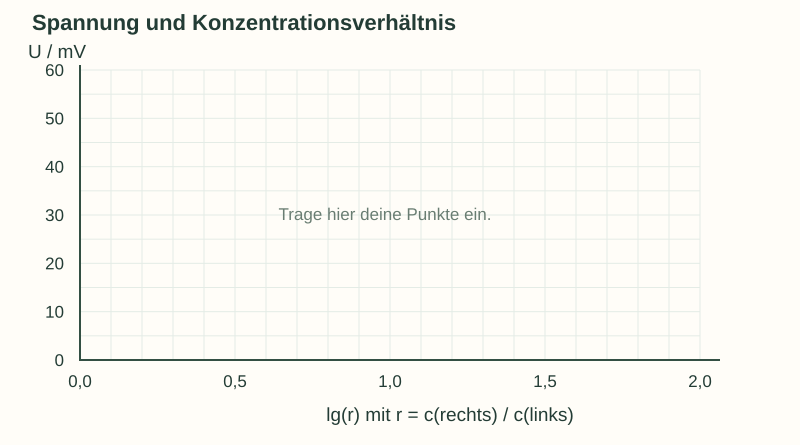
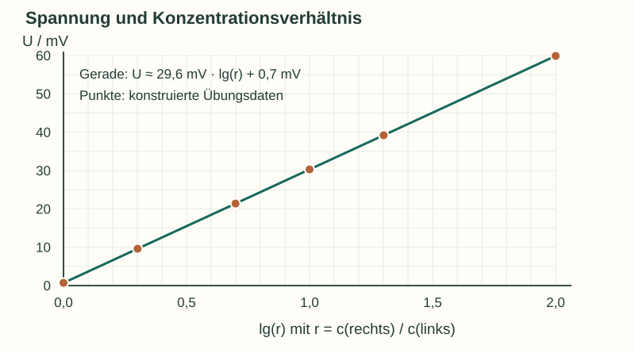

Informieren
Erklärung und Beispiel öffnen
Was musst du verändern – und was gleich halten?
Um einen Konzentrationseinfluss zu prüfen, vergleichst du zwei Halbzellen mit demselben Redoxpaar. Beim Kupfer-Konzentrationselement sind beide Elektroden aus Kupfer; nur die Cu²⁺-Konzentration wird gezielt variiert. Eine Zelle mit gleichen Konzentrationen dient als Kontrolle.
Temperatur, Elektrolyttyp, Elektrodenzustand, Messgerät, Anschlussrichtung und Beobachtungszeit müssen vergleichbar bleiben. Auch die Bauform zählt: Daten aus U-Rohr und Doppel-U-Rohr werden getrennt dargestellt. Ein mit CuSO₄ gefüllter Mittelraum beseitigt die Grenzflächenpotentiale nicht einfach.
Dokumentiere Konzentrationen und Seitenzuordnung, Temperatur, Bauform, Zeitpunkt und Vorzeichen jedes Wertes. Mehrere Zeitpunkte am selben Aufbau zeigen mögliche Drift. Sie sind keine unabhängigen Wiederholungen und liefern allein keine vollständige Messunsicherheit.
Beispiel: aus einem Verhältnis eine Diagrammkoordinate machen
Rechts seien 0,100 mol/L, links 0,0250 mol/L Cu²⁺ vorhanden. Dann ist r = c(rechts)/c(links) = 4 und lg(r) ≈ 0,602. Ein konstruierter Wert von 18,4 mV hätte im Diagramm die Koordinaten (0,602 | 18,4). Der Logarithmus ist der Zehnerlogarithmus: lg(10) = 1.
Auf der x-Achse steht lg(r), auf der y-Achse U in mV. Gleiche Abstände auf der x-Achse entsprechen gleichen Faktoren des Konzentrationsverhältnisses. Ein annähernd linearer Verlauf stützt eine logarithmische Beschreibung; wenige Punkte oder didaktische Modelldaten beweisen kein Naturgesetz.
Die folgenden Aufgaben betreffen Planung und Datenauswertung auf dem Papier. Eine praktische Durchführung richtet sich nach der freigegebenen Unterrichtsanleitung und Gefährdungsbeurteilung.
A · Einen Untersuchungsplan prüfen
Eine Gruppe schlägt vor:
Wir vergleichen einen Aufbau mit 0,100/0,0100 mol/L bei 22 °C im einfachen U-Rohr mit einem zweiten Aufbau mit 0,100/0,00100 mol/L bei 30 °C im Doppel-U-Rohr. Im ersten Versuch ist Rot rechts, im zweiten links. Eine Kontrolle brauchen wir nicht. Jede Anzeige lesen wir dreimal direkt nacheinander ab; das sind drei unabhängige Messungen.
- Erkläre mindestens vier Probleme dieses Vergleichs.
- Entwirf eine übersichtliche Vergleichstabelle für die Verhältnisse r = 1, 10 und 100. Halte c(rechts) = 0,100 mol/L fest. Ergänze die nötigen Konzentrationen links und mindestens fünf konstant zu haltende bzw. zu dokumentierende Größen.
- Lege fest, wie Wiederholungen, Drift und unterschiedliche Bauformen in der Auswertung behandelt werden. Du brauchst keine Arbeitsschritte zum Aufbau oder Umgang mit Chemikalien zu formulieren.
Hilfe 1
Ein fairer Vergleich verändert gezielt einen Einfluss. Prüfe, ob die Gruppe außerdem Temperatur, Aufbau und Messrichtung verändert.
Hilfe 2
Nutze c(links) = c(rechts)/r. Eine Kontrolle erhält gleiche Konzentrationen. Wiederholungen mit unabhängig bereitgestellten Aufbauten beantworten eine andere Frage als drei Ablesungen desselben Aufbaus.
Musterlösung
Probleme: Konzentration und Temperatur ändern sich gleichzeitig; die Bauformen sind nicht vergleichbar; die Anschlussrichtung wechselt und verändert das Vorzeichen; eine Nullvergleichskontrolle fehlt; direkte Mehrfachablesungen sind keine unabhängigen Wiederholungen. Ohne diese Trennung kann man Unterschiede nicht allein der Konzentration zuordnen.
| r | c(links) / mol/L | c(rechts) / mol/L |
|---|---|---|
| 1 | 0,100 | 0,100 |
| 10 | 0,0100 | 0,100 |
| 100 | 0,00100 | 0,100 |
Für eine Vergleichsreihe: gleiche Temperatur, dieselbe Bauform und Elektrolytart, vergleichbarer Zustand und Eintauchbereich der Cu-Elektroden, dasselbe Messgerät und derselbe Messbereich, Rot rechts/COM links sowie festgelegte Ablesezeitpunkte. Diese Angaben und die Rohwerte werden protokolliert.
Unabhängige Aufbauten werden als getrennte Wiederholungen erfasst. Werte nach 30/60/90 s beschreiben Drift; beispielsweise wird der 60-s-Wert geplottet und die gesamte Zeitspanne zusätzlich angegeben. Unterschiedliche Bauformen erhalten getrennte Symbole oder eigene Diagramme; eine gemeinsame Steigung wäre nicht begründet. Auffällige Werte bleiben sichtbar und werden kommentiert.
B · Daten grafisch auswerten
Dieser didaktisch konstruierte Datensatz dient ausschließlich der Auswertung. Er ist kein Ergebnis einer realen Frittenzelle. Für alle Zeilen gelten 25 °C, dieselbe gedachte Bauform, Rot rechts/COM links und c(rechts) = 0,100 mol/L. Gegeben sind die Werte nach 60 s.
| c(links) / mol/L | U / mV |
|---|---|
| 0,100 | 0,7 |
| 0,0500 | 9,6 |
| 0,0200 | 21,4 |
| 0,0100 | 30,3 |
| 0,00500 | 39,2 |
| 0,00100 | 59,9 |
- Ergänze r = c(rechts)/c(links) und lg(r) für jede Zeile. Trage U gegen lg(r) in das leere Diagramm ein.
- Zeichne eine zum Verlauf passende Gerade. Schätze ihre Steigung mit zwei möglichst weit auseinanderliegenden Punkten und deute die Einheit.
- Die Kontrolle liegt nicht bei 0 mV. Darfst du deshalb ungeprüft 0,7 mV von allen realen Kursdaten abziehen? Begründe. Formuliere außerdem, was diese konstruierte Reihe über eine echte Apparatur beweisen kann.

Leeres Diagramm herunterladen (SVG)

Hilfe 1
Beispiel für den ersten Schritt: r = 0,100/0,0500. Rechne zuerst das Verhältnis aus und wende erst danach lg an. Die Steigung ist ΔU/Δlg(r).
Hilfe 2
Die Verhältnisse reichen von 1 bis 100, die lg-Werte von 0 bis 2. Nutze für die Steigung den ersten und letzten Tabellenwert. Eine Differenz von 1 auf der lg-Achse entspricht einem zehnfachen Verhältnis.
Musterlösung
| r | lg(r), gerundet | U / mV |
|---|---|---|
| 1 | 0,000 | 0,7 |
| 2 | 0,301 | 9,6 |
| 5 | 0,699 | 21,4 |
| 10 | 1,000 | 30,3 |
| 20 | 1,301 | 39,2 |
| 100 | 2,000 | 59,9 |
m ≈ (59,9 − 0,7) mV / (2 − 0) = 29,6 mV
Da lg(r) dimensionslos ist, hat die Steigung die Einheit mV. Anschaulich: Pro Verzehnfachung des Konzentrationsverhältnisses steigt die Spannung in diesen Übungsdaten um rund 29,6 mV. Die Gerade lässt sich als U ≈ 29,6 mV · lg(r) + 0,7 mV beschreiben.

Die 0,7 mV sind hier ein gesetzter Beispieloffset. Bei echten Messungen ist eine pauschale Korrektur nicht gerechtfertigt: Ursache und Konstanz einer Restspannung sind zunächst zu prüfen. Die konstruierte Reihe übt die Auswertungsmethode. Sie bestätigt weder den Nernst-Faktor experimentell noch die Eignung einer realen Frittenapparatur.
Zurück zur Checkliste
Kannst du den Punkt jetzt an einer eigenen Erklärung oder einer neuen Aufgabe nachweisen? Ordne dich ein: sicher (selbstständig), teils (mit Hilfe) oder offen (noch Lernbedarf). Notiere bei Bedarf, was du noch klären möchtest.
Fachliche Quellen und Modellgrenzen
Rechnungen beziehen sich auf 25 °C, reine Metalle und das jeweils angegebene Redoxpaar. Aktivitäten werden nur dort näherungsweise durch c/c° ersetzt, wo das ausdrücklich genannt ist. Beiträge der Flüssigkeitsgrenzen werden im Rechenmodell vernachlässigt; reale Frittenzellen können zusätzliche Diffusionspotentiale aufweisen.
Eigene Erklärungen, Aufgaben und Grafiken. Zahlenbeispiele sind didaktisch gewählt; konstruierte Messdaten sind ausdrücklich gekennzeichnet.